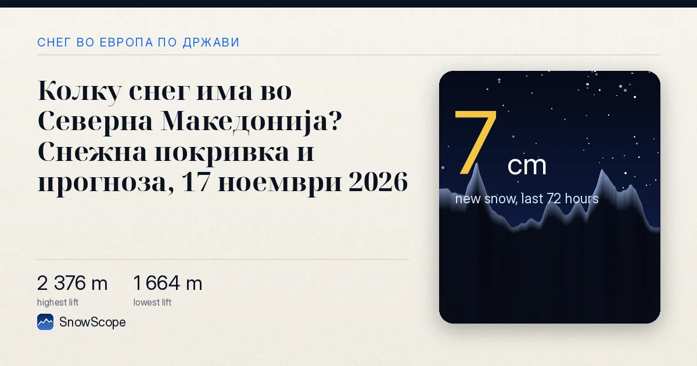
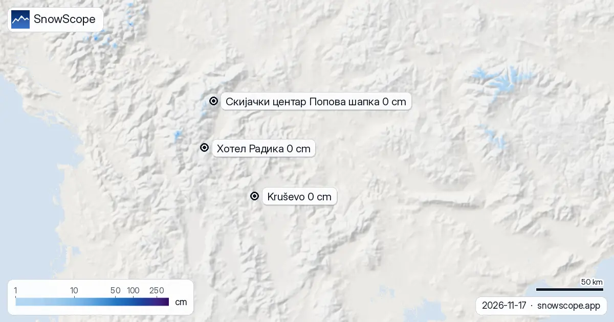

Колку снег има во Северна Македонија? Снежна покривка и прогноза, 17 ноември 2026
Снегот е редок низ Северна Македонија оваа недела. Само 50 km² бело тло остану на 17 ноември, и сите осум скијачки центри на мапата сè уште немаат скијачки снег. Планините мора да го задржат она малку што имаат додека чекаат потешка паѓање на снег предвидена во средата на неделата.
Погледнете ја прогнозата за снег за Скијачки центар Попова шапка во апликацијата SnowScopeДебелина на снегот, известувања и 3D карта, бесплатно.
Каде е снегот сега
Снегот лежи само над 2.400 m. Под таа висина, голи карпи и мртво траво доминираат во пејзажот. Дури и на 2.000 до 2.500 m, покривањето е речко: помалку од 1 cm во просек, и само 11 процентов од земјата е бело.
Планините Маврово го држат најмногу снег: 24 cm паѓа таму во последните три денови, иако тоа е локално на највисоките падини. Планините Шар и Пелистер добија многу помалку, со само 7 cm и 3 cm соодветно.
| Ски-центар | Дебелина на снегот | Нов снег, 72 ч | Наредните денови | Врв |
|---|---|---|---|---|
| Скијачки центар Попова шапка | 0 cm | 7 cm | 4 cm | 2 376 m |
| Хотел Радика | 0 cm | 0 cm | 0 cm | 1 271 m |
| Kruševo | 0 cm | 0 cm | 0 cm | 1 406 m |

Скорешна паѓање и проблемот со топлина
Само 1 cm снег паѓа низ земјата во 72 часа до 17 ноември. Тоа е речиси ништо. Благи температури на воздухот значат дека замрзнување во утро уступува на мора до пладне, така што секаква тенка основа се омекнува брзо и исчезнува.
Пред неделу, 10 km² снег ги покриваше планините. Вчера беше 160 km². Денес се собра на 50 km². Загубата од 110 km² во еден ден покажува колку брзо работи топлењето кога температурите остануваат над замрзнување на пониските и средни падини.
Што предвидува прогнозата
Следните три денови треба да донесат до 1 cm. Тоа едва ќе остави траг. Но изгледот се менува по тоа: неделата предвидена содржи до 10 cm, со понеделник 23 ноември изгледа како најснежан ден со до 6 cm на најдобрите места.
Ако таие прогнози се исполнат, планините Маврово и другото високо тло над 2.000 m би можела да видат вистинска дебелина на снег да се гради до крајот на неделата. Пониските падини ќе остануваат маргинални освен ако температурите резко не паднат.
Скијачки центри: чекаат на дебелина
Сите осум центри означени на SnowScope имаат нула дебелина на снег денес. Скијачки центар Попова шапка, највисокиот на 2.376 m, собра 7 cm во три денови и има 4 cm предвидено за следните три денови, но тоа сè уште не е доволно за скијање.
Хотел Радика и Крушево остануваат суво. За некој од овие центри да се отвори за скијање, линијата на снег мора да падне многу под 2.000 m и неколку денови на континуирана паѓање се потребни за да се гради стабилна основа.
Снег по висина: тесна линија на бело
Само една зона по висина содржи некој снег воопште. Помеѓу 2.000 и 2.500 m, средна дебелина е под 1 cm но 11 процентов од земјата е покривена. Под 2.000 m надолу до 500 m, нема ништо: 0 cm просечна дебелина, 0 процентов покривање.
Таа тесна зона значи дека скијачите имаат речиси никаде да работат. Скијачките центри се приближно премногу ниски за да уловат и задржат снег во овие благи услови. Чекањето на постудено време и повеќе паѓање е единствениот пат напред.
Што да се очекува низ неделата
Ако ги гледате планините на Северна Македонија, клучниот датум е понеделник 23 ноември. До 6 cm е предвидено за тој ден низ најснежните места, главно високото тло над 2.200 m. Тоа би дволи или троли го сегашното покривање и би почнало да гради основа.
До тогаш, планините ќе останат главно голи. Јасни ноќи носат цврст снег на било кои остатоци што остануваат, но пладнето е благо доволно да го омекне повторно. Само кога снегот дошта во вистинска количина и температурите останат студени, скијачката сезона вистински ќе почне.
Совети за скијачи
- Ако се качите на 2.400 m или повисоко во планините Маврово, било кој снег што ќе го пронајдете ќе биде цврст во утро. Чекајте полнече-утриното сонце да ги омекне подините обработени кон југ пред скијање.
- Ветерот може да го сабие снегот цврсто на изложени гребени и врвови над линијата на дрвја, дури и во мали количини. Бидете опрезни ако се упатите на врвовите.
- Раноносна снег на тенко тло може да скрие камен и корени. Испитајте со вашиот скијачки пол пред да се посветите на трка.
- Проверете го официјалниот билтен за лавина пред било какво вонпистско движење, посебно по потешката паѓање на снег предвидена за 23 ноември.
- Следете го предвидување внимателно за температура. Ако максимумот остане над 5°C, евентуален нов снег брзо ќе се распадне. Број на скијачи треба да остане низок додека условите не се стабилизираат.
About these numbers
Resort snow depths are the deepest snow on the resort's upper slopes on the date shown; they are estimates for an area, not a measurement at one point. Forecasts can change. Always read the official avalanche bulletin before going off-piste.
Cite this report
For research, teaching or the press: the numbers and charts are free to reuse under CC BY 4.0 with this citation.
SnowScope (2026), Колку снег има во Северна Македонија? Снежна покривка и прогноза, 17 ноември 2026, https://snowscope.app/blog/mk/2026/11/north-macedonia-snow-report-17-november-2026.html, accessed 2026-11-17
SnowScope (Atlas Labs). (2026, November 17). Колку снег има во Северна Македонија? Снежна покривка и прогноза, 17 ноември 2026. SnowScope snow reports. https://snowscope.app/blog/mk/2026/11/north-macedonia-snow-report-17-november-2026.html
BibTeX
@misc{snowscope2026northmacedoniasnowreport,
author = {{SnowScope (Atlas Labs)}},
title = {Колку снег има во Северна Македонија? Снежна покривка и прогноза, 17 ноември 2026},
year = {2026},
month = nov,
howpublished = {\url{https://snowscope.app/blog/mk/2026/11/north-macedonia-snow-report-17-november-2026.html}},
note = {Published 2026-11-17 12:56 UTC; accessed 2026-11-17}
}· CC BY 4.0 · Methods, data and tools →
Скијачки центар Попова шапка: snow and temperature by height, this winter vs last (tools) →
Follow Скијачки центар Попова шапка
Бесплатно: порака кога доаѓа нов снег и прогнозата секое утро.